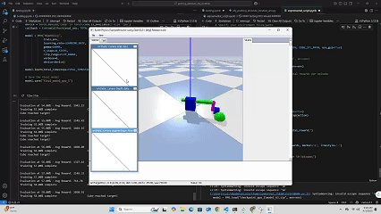
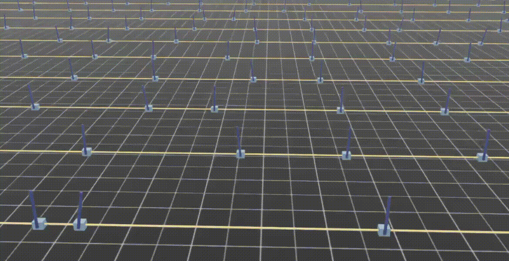
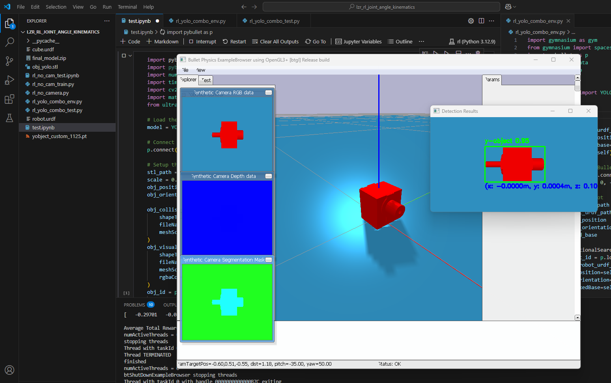
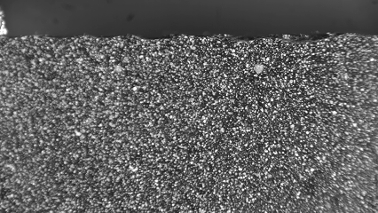

Experiments, explorations, and quick implementations
Worked through NVIDIA's cuRobo motion-generation stack end to end — forward and inverse kinematics, collision-free motion planning, and reactive MPC control. Fed live 3D data from an Intel RealSense camera into cuRobo's volumetric (voxel) world model so the MPC planner could dynamically avoid real obstacles as they appeared. Swapped the tutorial's Franka Panda for a simulated Trossen ViperX 300s arm via its URDF, exercising the pipeline on a different robot to explore the latest GPU-accelerated robotics stack.
Ran and tested ORB-SLAM for real-time monocular simultaneous localization and mapping. Explored feature extraction, map point management, and loop closure on live camera feed.
Side-by-side depth quality comparison between Intel RealSense and Microsoft Kinect. Evaluated depth accuracy, noise characteristics, and range performance for robotics perception use cases.

Trained a reinforcement learning agent to push objects to a target location in simulation. Explored reward shaping and policy convergence for contact-rich manipulation tasks.

Implemented and trained an RL controller for the classic inverted pendulum balancing task inside NVIDIA Isaac Sim. Used as an early test of the Isaac Sim RL workflow and environment setup.

Trained a custom YOLO object detection model using synthetically generated images. Explored pipeline from synthetic scene generation to model training and validation.

High-speed camera capture of metal chip formation during machining. Recorded to study material deformation and cutting dynamics at the microscale.